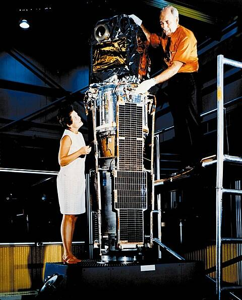

Uhuru
Материал из Википедии — свободной энциклопедии
Спутник UHURU (Ухуру) — первая орбитальная рентгеновская обсерватория. Впервые спутниковая миссия была полностью посвящена изучению небесных источников рентгеновского излучения. Предыдущие эксперименты по исследованию рентгеновского излучения небесных источников проводились исключительно на суборбитальных ракетах, что значительно ограничивало полезное время работы их инструментов.
Обсерватория «Ухуру» (также известная как SAS-A, англ. Small Astronomical Satellite-A, или Explorer 42) явилась первой в серии малых астрономических спутников американского космического агентства НАСА (следующие спутники этой серии — SAS-2 и SAS-3). Основной задачей обсерватории было проведение обзора всего неба в рентгеновском диапазоне энергий.
Основным режимом работы обсерватории было сканирование неба за счёт вращения вокруг своей оси с периодом ~12 минут. В специальных случаях было возможным существенно замедлить вращение спутника — до одного оборота за ~1,4 часа. Именно такой режим был использован исследователями при наблюдениях открытых обсерваторией «Ухуру» рентгеновских пульсаров.
Спутник был запущен на орбиту ракетой-носителем «Скаут Б» с морского космодрома — платформы Сан-Марко у берегов Кении в 1971 году. Руководитель программы малых астрономических спутников (SAS) Марджори Таунсенд (Marjorie Townsend) предложила назвать спутник «Ухуру», что в переводе с суахили означает «свобода», в честь 7-й годовщины независимости Кении, когда и состоялся запуск обсерватории SAS-A.
Инструменты
Инструментами обсерватории были два пропорциональных газовых счётчика с эффективной площадью 840 кв. см каждый. Эффективный рабочий диапазон инструментов 2—20 кэВ. Нижняя граница рабочего диапазона определялась пропусканием бериллиевого окна и пропусканием тепловой защиты инструментов. Фоновая скорость счёта детектора подавлялась путём разделения сигналов по форме импульса (pulse-shape discrimination) и антисовпадательной защитой. События, зарегистрированные приборами, записывались в 8 энергетических каналов. Две пары детекторов были помещены под коллиматоры разного размера — 0,52°×5,2° и 5,2°×5,2°.
Результаты
Результатами работы обсерватории стала серия фундаментальных открытий в астрономии. А именно:
- Открытие рентгеновских пульсаров — аккрецирующих вращаюшихся нейтронных звёзд.
- Открытие того, что аккрецирующие нейтронные звезды — рентгеновские пульсары — находятся в двойных системах;
- Открытие рентгеновского излучения скоплений галактик;
- Открытие нестационарности излучения рентгеновских источников. Из того факта, что рентгеновское излучение источника Лебедь Х-1 демонстрировало значительную переменность на масштабе времени до ~70 мс, впервые стало возможным сделать предположение, что центральным массивным объектом в этой системе является чёрная дыра; этот факт является первым экспериментальным подтверждением реального существования чёрных дыр;
- Впервые получена карта всего неба в рентгеновском диапазоне. В каталог, составленный по результатам работы обсерватории, вошло 339 источников;
Другие спутники программы SAS
- SAS-2
- SAS-3